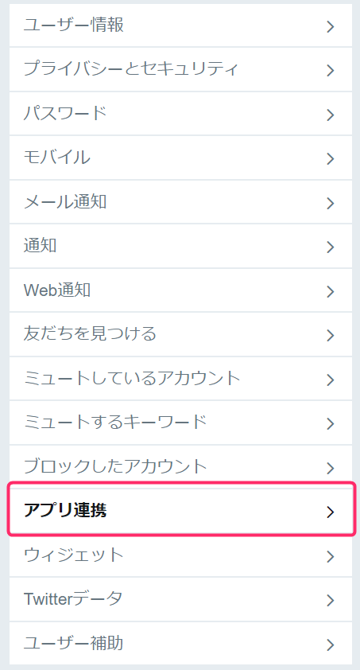
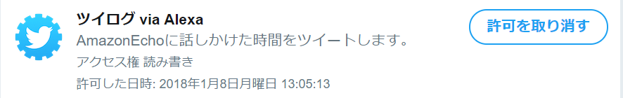

このスキルはユーザーの個人情報（名前、年齢、住所、地域、Amazonアカウントなど>）は収集しません。
スキルを無効化してもTwitterのアプリケーション認証は解除されません。
解除するにはTwitterの「アプリ連携」ページから「ついろぐ」の連携許可を取り消してください。


お問い合わせは、以下のTwitterアカウントへお願いします。https://twitter.com/quo1987